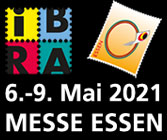

Websites Competitions 2021

IBRA 2021
INDIVIDUAL REGULATION (IREX) - ExcerptsArticle 4 – CONDITIONS OF PARTICIPATION
4.1 Competitive Exhibition Classes:
Exhibitors who are members of national federations/societies/associations of the Fédération Internationale de Philatélie (FIP) are eligible for participation. An exhibitor who satisfies the following may submit exhibits: Entries winning at least a vermeil award at the National exhibitions (for classes 2- 14 under Article 5.2).Article 5 – EXHIBITION CLASSES
5.2 Competitive Classes:Class 15: Philatelic Literature
F) Websites and other digital products as experimental class
For Class 15F 2020, the FIP presents more detailed regulations for testing, which may enable further differentiation of digital products8.6 The National Commissioners shall collect the participation fees from the exhibitors and remit them to the Organizing Committee by February 1 2021.
9.4 The participation fee for Philatelic Literature (Class 15) is Euro 50 per exhibit
10.7 Exhibitors in the Philatelic Literature Class (Class 15) must send one copy of each title no later than by March 1, 2021 in order that preliminary judging may take place. These copies are not returnable. Source. (note: nonsense for websites).
From the site: "Here you will find the list of jurors in time for IBRA 2021." (note: none is displayed so far, even if we are invited to fill-in the participation forms).
Notes
- The websites etc. are still an "experimental class". It was started as such by the FIP in 1999 (where I participated) and, after over 20 years, FIP affiliated organizations still cannot overcome this "experimental" stage.
- Who pays for these experiments? But the future participants, of course, and not the learning members of the juries. The participation does not cost a small amount, since the participation fee is Euro 50 (USD 56) for something that is immaterial, i.e. is not necessary to be transported, assured, mounted, etc. Actually it will not be shown at all at the exhibition itself, and so often even a link to the exhibit will not be displayed on the exhibition's website (or it will disappear very fast).
- It is a requirement that exhibitors should be members of national federations/societies/associations of the FIP and they have to go through their National Commissars, what does not make sense for websites competitors, because the websites are not nationally located. This is the reason why many philatelic webmasters are not members of national philatelic organizations anymore.
For all these reasons, even if I participated so far in almost all philatelic websites competition, I will pass this one, knowing in advance that I will miss the opportunity to notice a possible positive evolution.
| Created:
June 18, 2020. Revised:
June 18, 2020. Copyright ©2020 by PWO and by Victor Manta, Switzerland/USA All rights reserved worldwide. |
|